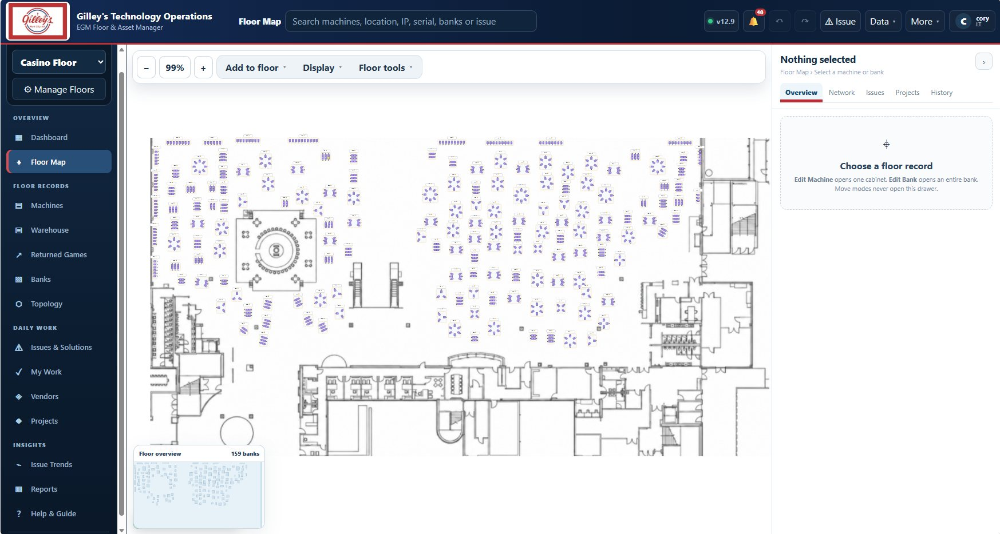
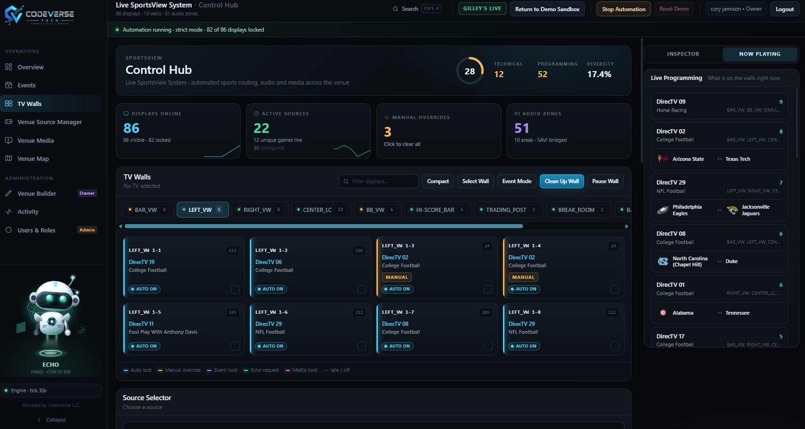
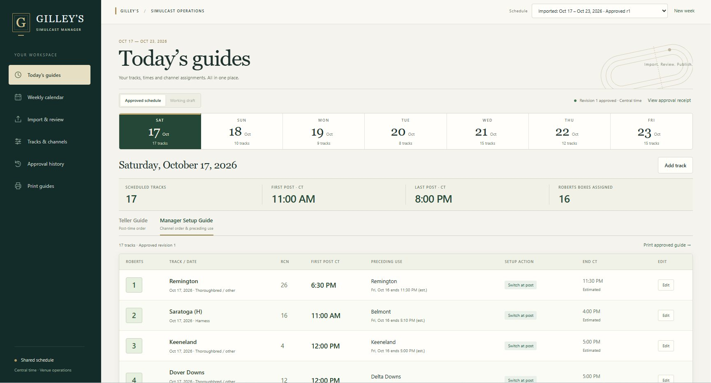

Mobile 3D that actually loads
Vendor cabinet models were too heavy for phones. I added load-time diagnostics to separate network, model and GPU bottlenecks, then managed model size until touch inspection ran smoothly.
IT Specialist & full-stack developer
I have built software for A/V and IT related problems. When my staff hit a problem that no off-the-shelf tool fits, I design, build and deploy one myself.
A full-stack operations platform for the casino and arcade. Floor maps, every machine, staff, permissions, inventory and service history live in one shared system.

Machine records, floor layouts and repair history were spread across spreadsheets and people's memory. Slot techs couldn't see what changed on the floor or who changed it, and the casino and arcade teams track different things in different words.
Vendor cabinet models were too heavy for phones. I added load-time diagnostics to separate network, model and GPU bottlenecks, then managed model size until touch inspection ran smoothly.
The staff list ignored a filter fix that I had already shipped. I traced it to a stale Python process still serving the old filter logic behind the updated UI.
The schema grew as features shipped, and older inventory records still load cleanly even though they predate the newer cost fields.
An AI-controlled AV automation platform. It puts the right games on the right screens on its own, and staff can run the whole venue in plain English.

A sports venue has dozens of TVs, video walls, DirecTV receivers and audio zones, each with its own vendor control. Staff were routing games by hand during the busiest hours, and nothing tied the TV schedule to what was actually on each screen.
Echo can only return actions from an approved list. It never runs raw code, and it never sees credentials, tokens, raw config or network addresses. The engine, not the AI, owns routing safety.
Tracked down blocked receiver connections, missing previews, duplicate server processes and connection resets by isolating the browser, server and device layers one at a time.
Visual refreshes keep every existing control, permission and behavior, so staff never have to relearn the screen in the middle of a game night.
It turns the weekly race-track calendar PDF into an approved broadcast schedule and prints the guides tellers and managers use on the floor.

Each week a manager rebuilt the simulcast schedule by hand in Excel from the United Tote calendar. That meant every track, post time, receiver box and channel, and it was easy to double-book a channel or miss an overnight race.
Optimistic concurrency rejects saves from a stale browser tab, so one manager can't silently overwrite another's edits.
The app was seeded from the existing Excel workbooks, and SHA-256 hashes confirm it never wrote to them. Release manifests hash every shipped file.
The schedule follows the PDF's printed date range, not a fixed Sunday-to-Saturday week, so one download is reviewed and approved once.
Building AI that controls real equipment in a live venue.
Echo is the natural-language layer I built into SportsView. Staff type what they want, the way they'd say it to a coworker. Echo works out which screens, sources, zones and times they mean, using the live state of the venue, and turns the request into a plan the engine can run.
The hard part isn't getting a language model to answer. It's making sure a wrong answer can never do damage. So Echo can only propose actions from an approved list. Anything that changes the schedule waits for a person to confirm it, and the routing engine still owns every safety decision.
action: schedule_event_mode source: resolved from live channels walls: BAR_VW, LEFT_VW when: Sun 12:00 PM CT status: waiting for confirmation
The same habits run through all three projects.
I work in the building these tools serve. Requests from techs, tellers and managers become specific fields, permissions and screens, and I test with the people who will use them.
A passing test isn't the finish line. I confirm that the TV changed, the speaker responded and the printout matches the workbook.
I back up before every release, use Git history, keep database snapshots and hash release manifests, so any change can be traced and rolled back.
Every system ships with guides staff actually use: START HERE sheets, an in-app Help & Guide and manager trial checklists. Confirmation steps are built into the screens.
Python, JavaScript, HTML/CSS, SQL, PowerShell, Bash, C, C++, Java
Responsive dashboards, data tables, drawers and modals, touch and mouse input, canvas maps, WebGL
Python servers, FastAPI, REST design, input validation, sessions, structured errors
GraphQL, vendor API reverse engineering, device control with physical-state checks
SQLite schema design, relational modeling, migrations and backward compatibility
RBAC, password handling, server-side enforcement, network allowlisting, HTTPS certificates
Windows Server, Linux, macOS, Active Directory, Group Policy, patching and provisioning
VMware ESXi, Hyper-V, TCP/IP, VLANs, VPN, Wireshark, tcpdump, SNMP
Git/GitHub, Freshservice, ITIL change management, runbooks and documentation
Administer IT and AV across the casino floor, arcade and simulcast operations, triage Freshservice incidents, and design and deploy the software on this page.
Ran daily branch operations, budgeting and reporting, and hired, trained and led the branch team.
Designed and maintained databases and the systems that use them; wrote and tuned queries.
Cleaned, analyzed and visualized operational data to guide business decisions.
Monitored systems and network traffic, investigated anomalies and supported incident response.